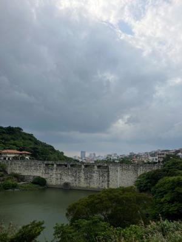
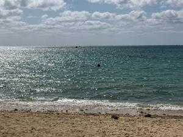
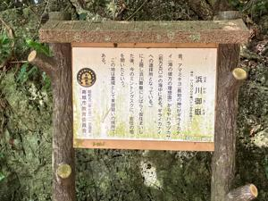
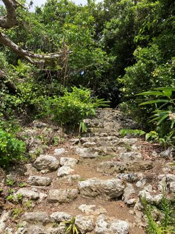
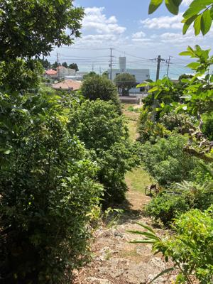
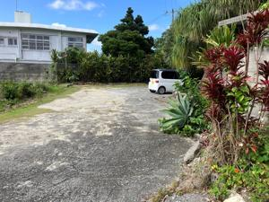
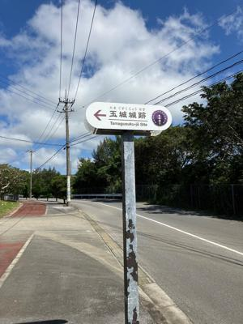
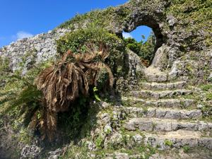

うるがいの話 ある日
最新: 「東御廻り」巡礼終える【うるがいの話 ある日】とは 一日だけのプログです
『うるがいの話』の最新一日だけのプログで、通信料が少なく経済的だ。カニの画像をクリックすると全ての日付が載る『うるがいの話』サイトを表示します
|
|
【うるがいの話】 うるがい(ｳﾙｶﾞｲ urugai)とは、『もずくがに』の名前でとても大きくなります。 |
|---|---|
|
|
【カミマヤーの話】 猫のことを方言でマヤーといいます。カミマヤー（kamimayaa）とは、神の猫のことです。 |
|
【たながぁの音楽】 たながぁ（ﾀﾅｶﾞｰ tanagaa）とは手長えびのことで、何種類かあり大きいのは車 エビぐらいになります。 |

|
【ぶながぁの話】 ぶながぁ(ﾌﾞﾅｶﾞｰ bunagaa)とは、赤い髪の毛、赤い身体、そして身長は１ｍ２０ｃｍ ぐらい、川の蟹を食べているの目撃された。場所は沖縄県国頭郡大宜味村のと ある村僕の隣近所に住んでいる爺さんから、聞いた話です。 |
|
|
【ギーマの話】 ギーマ(giima)とは、山原の里山に咲くスズランに似た、 花を付けます。実は食べられます、 気が付くと口の周りが紫になっています。 |
2023年05月26日 (金）「東御廻り」巡礼終える
15:07
       
さー、最後の巡礼に行くかと下調べをする。おや、たしか１２番目の浜川御嶽
（はまがわうたき）だが、おや、１１番目のヤハラヅカサと同じ場所、え！。
写真を撮っていない、しかたない、また行くか。と、百名ビーチ近くの１１番
目のヤハラヅカサへ行く。前回行った場所をウロウロ、浜川御嶽の写真を撮る
ついでに、潮が満ちたヤハラヅカサをもう一度写真を撮る。さー、一番難しい
そうな、民家の中にあるという１３番目の『ミントングスク』、スマホのカー
ナビを使うが（ブルートゥースのイヤホンの音だけの進む）、やはり悩む。た
だし、迷うのは想定内なので、バイクを適当な所に停めアイホンのマップを見
ながら、歩く。とある民家の駐車場、ホエ・・、ここかな、確かに案内が全く
見当たらない、こそこそ民家に侵入する、ん？、なんか石段が見える。フと民
家の２階を見上げると、５０代の男性が『ミントグスクですか、そこですよ』
と石段の上を示す。ウガンしたいので入っていいですか、『いいですよ』と家
に引き込んだ。石段の前に、椅子があり椅子の上に百円が９つほど、準備して
いた百円玉を置く。石段を上るが、ただの珊瑚礁の跡、うがんしてる香炉があ
り、手を合せる。ん、たまたま家の人が親切にしてくれたから良かったが、南
城市、誰かかのサイトであったように何とかならないのかと思う。そして、巡
礼最後１４番目の玉城(たまぐすく)グスクへ行く。城跡の中に、うがん場所が
ありそこの香炉には、十円玉が２０個ぐらい、５０円玉も数個、私も百円を置
きウガンする。８時半過ぎに家をでて、玉城(たまぐすく)グスクを出るとき時
計は１０時だった。台風２号が来る前のいい天気に、行けてヨカッタ。
１４時５７分 ビットコインの総資産 ￥１０、６７５（↑３７）